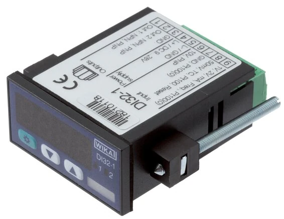
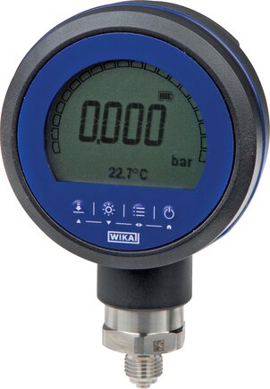

Một cảm biến áp suất hay nhiệt độ phát ra tín hiệu 4–20 mA rất chuẩn xác, nhưng bản thân dòng điện đó không giúp người vận hành đọc được giá trị. Đó là lúc cần bộ hiển thị: hoặc gắn ngay trên transmitter để đọc tại chỗ, hoặc gắn trên tủ để hiển thị tập trung và điều khiển theo ngưỡng. WIKA cung cấp cả hai giải pháp — sandwich display và bộ hiển thị/điều khiển gắn tủ (panel-mount). Fast Group Engineering là đại lý cung cấp hàng chính hãng WIKA (Germany) tại Việt Nam.

Gợi ý chọn nhanh
- Cần đưa tín hiệu áp suất về PLC, DCS hoặc bộ hiển thị.
- Cần chọn 4-20 mA, 0-10 V, 2-wire hoặc độ chính xác.
- Cần so sánh transmitter tiêu chuẩn và màng phẳng.
- Dải đo, output, nguồn cấp và kết nối điện.
- Ren process, vật liệu wetted và cấp bảo vệ IP.
- Độ chính xác, nhiệt độ môi chất và yêu cầu chứng từ.
- Danh mục cảm biến áp suất WIKA.
- Bài 4-20 mA / 2-wire.
- Bài độ chính xác transmitter.
Tóm tắt nhanh
- Sandwich display: màn hình gắn xen giữa transmitter và đầu nối, hiển thị ngay tại điểm đo.
- Panel-mount display/controller: gắn trên tủ, hiển thị số lớn + relay điều khiển theo ngưỡng.
- Nhận tín hiệu 4–20 mA (và loại khác), quy đổi ra đơn vị kỹ thuật: bar, °C, m³/h...
- Dùng khi cần đọc tại chỗ, cảnh báo hoặc điều khiển ON/OFF.

Hai giải pháp hiển thị
1. Sandwich display (gắn trên transmitter)
Loại này lắp ngay trên transmitter, lấy tín hiệu vòng 4–20 mA để hiển thị giá trị ngay tại điểm đo mà không cần kéo dây về tủ. Ưu điểm là gọn, nhanh, thuận tiện cho vận hành viên đi kiểm tra tại hiện trường (field) — nhìn một cái là biết áp suất hoặc nhiệt độ đang ở mức nào. Nhiều model là loop-powered, nghĩa là lấy nguồn ngay từ vòng dòng 4–20 mA nên không cần cấp nguồn riêng.
2. Bộ hiển thị/điều khiển gắn tủ (panel-mount)
Loại này gắn trên mặt tủ điều khiển, màn hình số lớn dễ đọc từ xa, và thường tích hợp thêm:
- Relay ngõ ra để điều khiển bơm, van, đèn hoặc còi báo theo ngưỡng.
- Scale/offset để quy đổi tín hiệu sang đơn vị mong muốn.
- Nhiều loại ngõ vào (universal input): 4–20 mA, RTD, thermocouple, điện áp.
So sánh nhanh hai loại
| Tiêu chí | Sandwich display | Panel-mount |
|---|---|---|
| Vị trí lắp | Tại transmitter (field) | Trên tủ điều khiển |
| Chức năng | Chủ yếu hiển thị | Hiển thị + relay điều khiển |
| Đi dây | Ít, gọn | Cần đưa tín hiệu về tủ |
| Nguồn | Thường loop-powered | Cần nguồn cấp riêng |
| Ứng dụng | Đọc tại chỗ | Giám sát/điều khiển tập trung |
Quy đổi tín hiệu 4–20 mA sang đơn vị kỹ thuật
Điểm mấu chốt của một bộ hiển thị tốt là khả năng scale: gán 4 mA ứng với đầu thang và 20 mA ứng với cuối thang đo. Ví dụ transmitter đo áp 0–25 bar: bạn cài hiển thị 4 mA → 0.0 và 20 mA → 25.0, khi đó dòng 12 mA sẽ hiển thị 12.5 bar. Tương tự với nhiệt độ, lưu lượng hay mức. Nhờ scale/offset, cùng một bộ hiển thị có thể dùng cho nhiều dải đo khác nhau — chỉ cần cấu hình lại thông số, không phải đổi thiết bị.
Điều khiển theo ngưỡng bằng relay
Với bản panel-mount có relay, bạn cài setpoint để đóng/cắt ngõ ra. Ví dụ trạm bơm: cài relay bật bơm khi áp xuống dưới 2 bar và tắt khi đạt 4 bar. Nên đặt kèm một khoảng hysteresis hợp lý để relay không rung khi giá trị dao động nhẹ quanh ngưỡng. Đây là cách biến một tín hiệu đo thành một vòng điều khiển ON/OFF đơn giản mà không cần đến PLC.
Cách chọn (Checklist)
- [ ] Loại tín hiệu vào: 4–20 mA, và/hoặc RTD, TC, điện áp.
- [ ] Vị trí lắp: field (sandwich) hay tủ (panel).
- [ ] Có cần relay điều khiển theo ngưỡng không, mấy kênh.
- [ ] Quy đổi đơn vị (scale) theo dải đo thực tế.
- [ ] Nguồn cấp & cấp bảo vệ IP.
- [ ] Kích thước khoét tủ (ví dụ 96×48 mm) nếu panel-mount.
Lỗi thường gặp khi lắp bộ hiển thị
- Quên cấu hình scale, khiến màn hình hiển thị mA thô thay vì đơn vị kỹ thuật.
- Chọn sai kiểu nguồn: lắp bản cần nguồn riêng nhưng lại kỳ vọng loop-powered.
- Vượt điện trở tải của vòng dòng khi mắc nối tiếp nhiều thiết bị vào cùng loop 4–20 mA.
- Đi dây tín hiệu chung máng với cáp động lực, gây nhiễu và giá trị nhảy.
Ứng dụng điển hình
- Hiển thị áp suất/nhiệt độ tại field từ transmitter.
- Trạm bơm: hiển thị và điều khiển ON/OFF theo ngưỡng.
- Tủ điều khiển quá trình: đọc nhiều điểm đo tập trung.
- Giám sát mức bồn, lưu lượng qua tín hiệu 4–20 mA.
Universal input: một thiết bị, nhiều loại tín hiệu
Nhiều bộ hiển thị panel-mount hiện đại hỗ trợ universal input — tức là cùng một thiết bị có thể nhận 4–20 mA, Pt100, thermocouple hoặc tín hiệu điện áp, chỉ cần chọn kiểu đầu vào khi cấu hình. Ưu điểm là tồn kho dự phòng gọn hơn: bạn chỉ cần giữ một mã hiển thị cho cả điểm đo áp suất lẫn nhiệt độ, thay vì nhiều model riêng. Khi hỏi giá, hãy nêu rõ bạn muốn bản cố định một loại tín hiệu (giá tốt hơn) hay bản universal (linh hoạt hơn).
Dùng bộ hiển thị hay đưa thẳng về PLC?
Không phải điểm đo nào cũng cần PLC. Nếu chỉ cần đọc giá trị tại chỗ và đóng/cắt một tải theo ngưỡng, một bộ hiển thị có relay là giải pháp gọn, rẻ và nhanh triển khai. Ngược lại, khi cần ghi dữ liệu, liên động nhiều điểm đo, hoặc điều khiển phức tạp, thì tín hiệu nên đưa về PLC/DCS — và lúc này bộ hiển thị field vẫn hữu ích để vận hành viên đọc trực tiếp mà không phải mở tủ. Trong nhiều nhà máy, hai giải pháp bổ sung cho nhau chứ không loại trừ.
Câu hỏi thường gặp
Panel-mount có điều khiển được bơm không?
Có, qua relay ngõ ra cài theo ngưỡng, kết hợp mạch điều khiển/contactor phù hợp công suất.
Sandwich display có cần nguồn riêng không?
Nhiều loại lấy nguồn ngay từ vòng 4–20 mA (loop-powered); nên kiểm tra theo model cụ thể.
Hiển thị được đơn vị bar/°C tùy chọn không?
Có, cài scale/offset để quy đổi tín hiệu sang đơn vị kỹ thuật mong muốn.
Một loop 4–20 mA mắc được mấy thiết bị?
Tùy điện áp cấp và tổng điện trở tải; cần tính burden để không vượt giới hạn của transmitter.
Cần tư vấn hoặc báo giá bộ hiển thị WIKA?
Gửi loại tín hiệu, vị trí lắp và yêu cầu điều khiển để nhận báo giá trong 24h.
- Email: minhduc@fastgroup.vn · Zalo: (+84) 938 888 958
Fast Group Engineering – đại lý cung cấp hàng chính hãng WIKA (Germany) tại Việt Nam.
Bài liên quan: [Cảm biến áp suất WIKA 4–20 mA] · [Công tắc áp suất điện tử Heavy Duty] · [Temperature transmitter compact] · [Bộ điều khiển nhiệt độ gắn tủ]